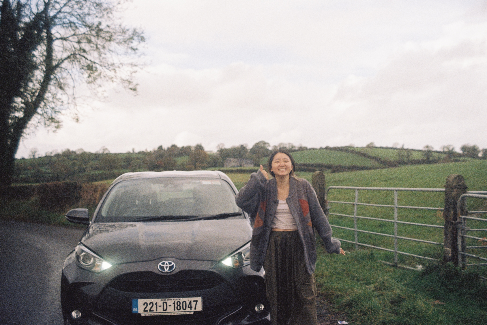

<!DOCTYPE html>
<html lang="en">
<head>
    <meta charset="UTF-8">
    <meta name="viewport" content="width=device-width, initial-scale=1.0">
    <title>Allison Lu</title>
    <!--Img size-->
    <style>
        /* Optional: Add some basic styling for the gallery */
        .image-gallery {
            display: flex;
            flex-wrap: wrap;
            gap: 20px;
        }
        .image-gallery img {
            max-width: 30%;
            height: auto;
        }
    </style>
    <link rel="stylesheet" type="text/css" href="../components/style.css">
    <script src="../components/script.js" defer></script>
    </head>
    <body>
        <!-- Your content goes here -->
        <!-- Include the navigation bar using JavaScript -->
        <!--<iframe src="../components/navbar.html" frameborder="0" width="100%" height="60"></iframe>-->
        <!-- Include header.html using JavaScript -->
        <!-- Container for the navbar -->
        <div id="navbar-container"></div>

        <script>
            fetch('../components/index.html')
                .then(response => response.text())
                .then(data => {
                    document.getElementById('navbar-container').innerHTML = data;
                });
        </script>
</body>
</html>


<header>
    <h1>Hello Hello! Allison Here,</h1>
    <p>Allison: Going with the flow</p>
</header>


<nav>
    <ul>
        <li><a href="journey.html">Journey</a></li>
        <li><a href="adventure.html">Adventure</a></li>
        <li><a href="about.html">About</a></li>
    </ul>
</nav>


<section id="about-me">
    <h2>About Me</h2>
    <p>
        I'm a student at Boston University, who is just finding their path in life.
        I am someone who takes on many side quests, and enjoy exploring new hobbies. 
        I want to use my computer science knoweldge to make a positive impact while fostering a creative outlet.
    </p>
    <!-- Add more content about yourself -->
</section>

<section id="photo">
    <!-- Gallery using a div container -->
    <div class="image-gallery">
        
    </div>
</section>

<section id="resume">
    <h2>Resume</h2>
    <h3>Experience</h3>
    <p>
        Intern - International Road Federation<br>
        Desktop Support Assistant - Boston University Medical Campus, Information Technology Department <br>
        Human Resources Intern - Office of the Massachusetts State Treasurer and Receiver <br>
        Digital Strategy Intern - Boston University, Development and Alumni Relations <br>
        Coding Instructor - Code Academy
    </p>
    <h3>Technical Skills</h3>
    <p>
        Java, Python, HTML, CSS, Javascript
    </p>
    <h3>Creative Skills</h3>
    <p>
        Adobe Illustrator, Figma
    </p>
    <h3>Certificate</h3>
    <p>
        fjdlsk
        Google UX Design
    </p>
    <!-- Add more content about yourself -->
</section>


<footer>
    <h3>Let's connect!</h3>
    <p>Contact: allisonlu100@gmail.com</p>
    <p>Follow me on <a href="https://instagram.com/wholu.moo" target="_blank">instagram</a></p>
</footer>